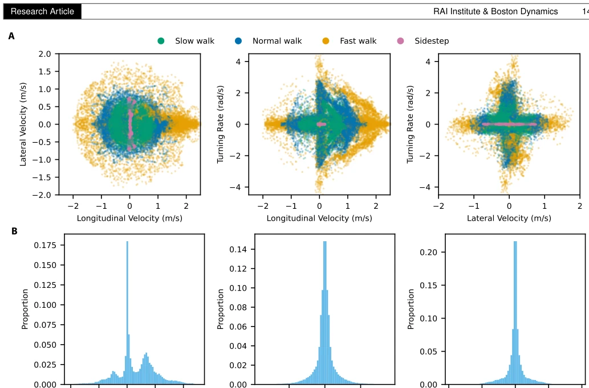
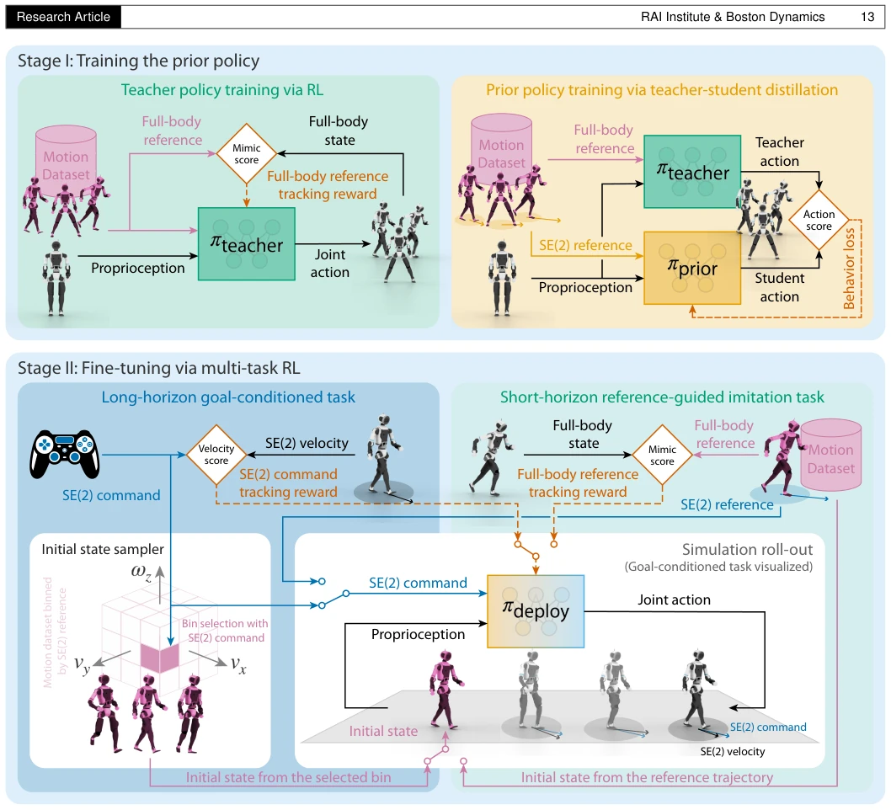
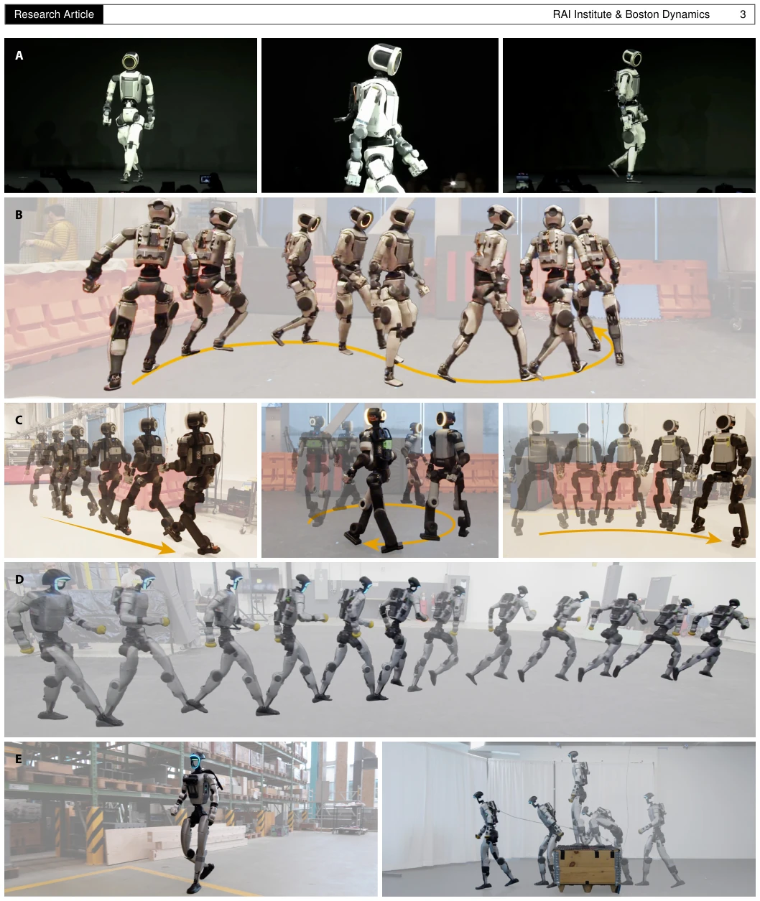
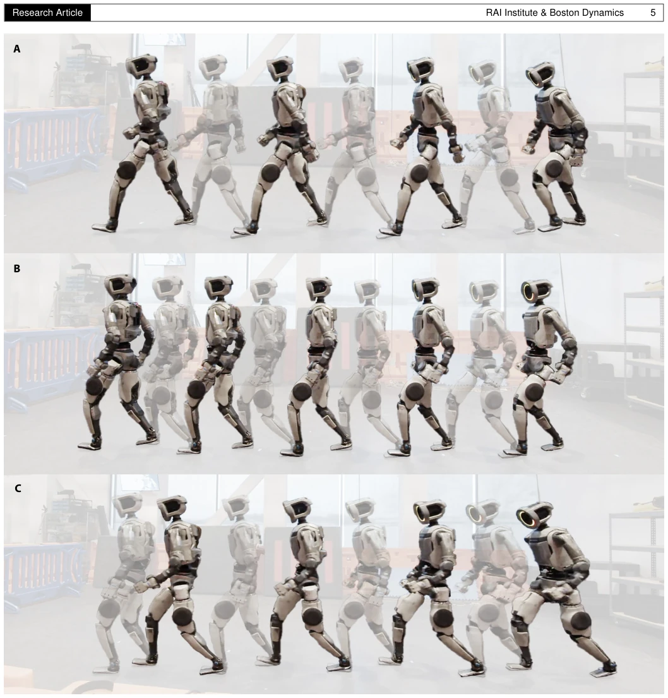
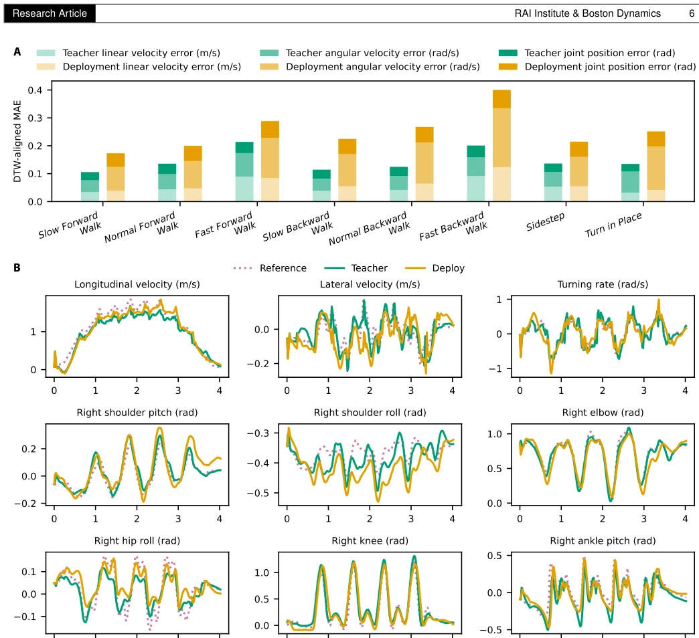
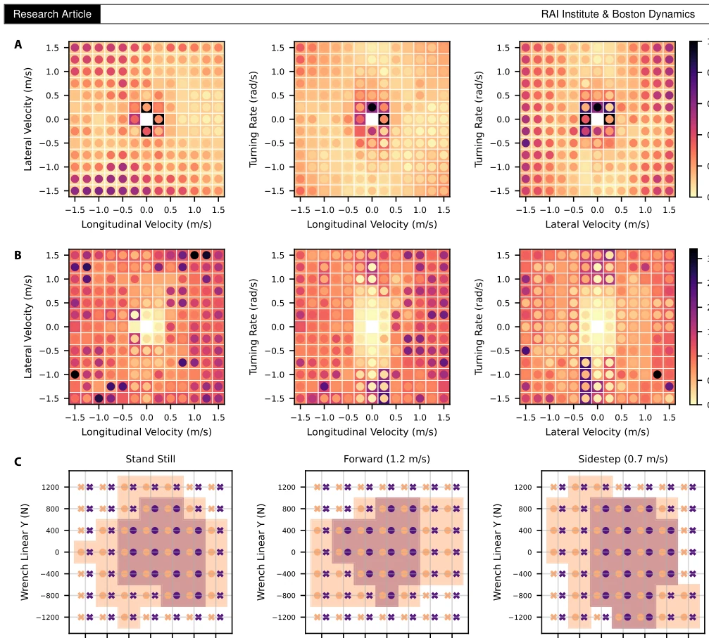
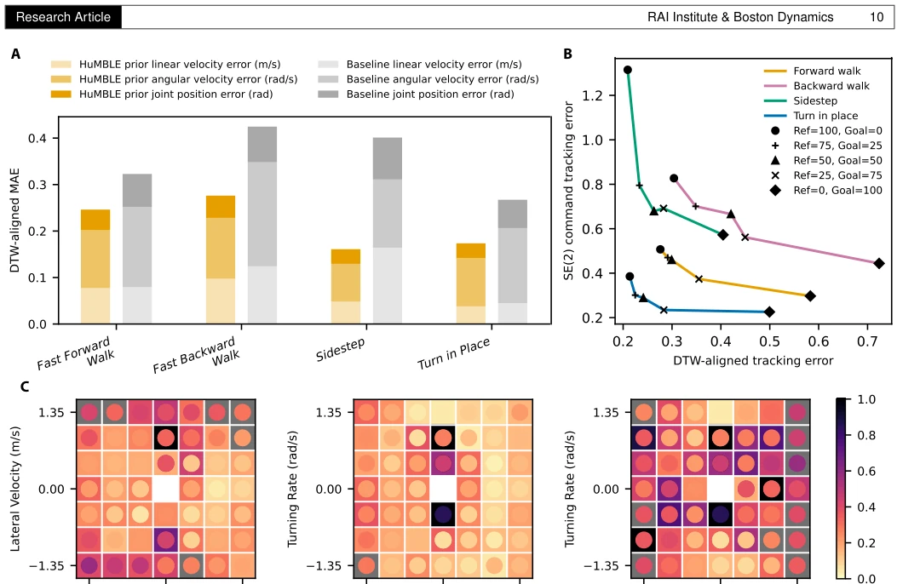

The name HuMBLE sounds humble, yet it is actually ambitious. It attempts to walk the tightrope between "human-like" and "obedient". Traditional MPC acts like a robot, pure RL acts like a machine; HuMBLE uses distillation to "steal" human gaits and then forcibly integrates them into the control framework via multi-task RL. The advantages are lightweight and fast execution on real hardware; the disadvantages are still reliance on data distribution, with some risk of "crashing" during fast running and turning. It counts as adding some "soul" to embodied motion, but has not yet fully escaped "data hunger". However, successfully running on Atlas and G1 is indeed much more fun than pure simulation.
Humanoid robots need to coexist with humans, so gaits must be natural [3, 4, 5]. But existing controllers either sacrifice style for robustness (MPC [11, 12]) or sacrifice generalization for style (pure imitation learning). Generative models (VAE/Diffusion) can model distributions, but inference is slow and training is unstable [22-25]. Adversarial Imitation Learning (AMP) [33] is effective, but min-max training is sensitive. The core contradiction is: how to achieve real-time response to arbitrary speed commands while maintaining human gait style? Existing methods struggle to balance both, leading to either stiffness or loss of control.

Fig. 7. Distribution of the human reference motion dataset. We illustrate the distribution of the annotated commands for our in-house cu- rated human motion dataset, retargeted to Atlas R1. While the dataset also contains high-speed sprinting maneuvers, this visualization focuses exclusively on the standard walking command distribution to clearly illustrate the most densely populated region. (A) Scatter plots illustrating the distribution of annotated velocity commands across four locomotion regimes (fast, normal, slow walk and sidestep). For visual clarity, the number of data points is decimated by a factor of 10. (B) Histograms displaying the marginal proportions of the dataset frames binned by longitu- dinal velocity, lateral velocity, and turning rate. The y-axis denotes the proportion
The framework is divided into two stages. Stage I Distillation: First train a Teacher Policy capable of tracking full-body references, then distill it into a Student Prior relying only on proprioception and SE(2) speed commands, solving the POMDP problem. Stage II Fine-tuning: Use multi-task RL to expand command coverage. Task 1 tracks arbitrary target commands (improving response), Task 2 tracks human data (as style regularization). This "learn style first, then control" strategy avoids mode collapse during direct training. The final policy is a lightweight MLP, requiring no generative inference, directly outputting joint actions, with inference taking only 1.1ms. By separating style acquisition and command space expansion, it achieves real-time response to arbitrary speed commands while maintaining human gait characteristics. Additionally, a goal-conditioned state-initialization scheme is introduced to stabilize rollout.

Fig. 6. Overview of the HuMBLE framework. Our approach trains the final control policy πdeploy through a two-stage process. Stage I em- ploys a teacher–student distillation pipeline to extract a natural locomotion prior πprior. Specifically, a teacher policy πteacher trained to track full-body reference motions is distilled into the student policy πprior, which maps only proprioceptive observations and a SE(2) command to joint-level actions. In Stage II, the prior policy is fine-tuned via multi-task RL to enhance responsiveness to arbitrary user steering commands while preserving the stylistic qualities of the reference motion data, ultimately forming the final deployment policy πdeploy.
实验Experiments
在 Atlas R1/D1 和 Unitree G1 上测试。数据集含 3 小时 MoCap。基线对比 MPC 和 Tabula Rasa RL。指标包括 MAE（风格保真度）、稳态误差、响应时间、抗推倒鲁棒性。结果：HuMBLE 步态比 MPC 自然（有摆臂、脚跟滚动），鲁棒性接近 Tabula Rasa。Sim-to-Real 误差小。消融显示蒸馏对保真度至关重要，多任务 RL 有效平衡了风格与控制。具体而言，部署策略在躯干线速度上 MAE 为 0.058 m/s，能抵抗 1400 N 推力，证明了其在真实场景下的可靠性。在快速转弯等极端指令下，误差略有增加，但整体表现稳健。
Tested on Atlas R1/D1 and Unitree G1. The dataset contains 3 hours of MoCap. Baselines compared against MPC and Tabula Rasa RL. Metrics include MAE (style fidelity), steady-state error, response time, push recovery robustness. Results: HuMBLE gait is more natural than MPC (has arm swing, heel rolling), robustness is close to Tabula Rasa. Sim-to-Real error is small. Ablation shows distillation is crucial for fidelity, multi-task RL effectively balances style and control. Specifically, the deployed policy has an MAE of 0.058 m/s on torso linear velocity, can resist 1400 N push, proving its reliability in real scenarios. Under extreme commands like fast turns, error increases slightly, but overall performance is robust.

Fig. 1. Summary of hardware results from HuMBLE. (A) Human-like steerable locomotion on the Boston Dynamics Atlas R1 was demon- strated live to the public on stage. (B) The Atlas R1 robot following real-time user steering commands that vary continuously in speed and direction while maintaining stylistic consistency with the human reference motion dataset. (C) The Atlas D1 robot performs backward walking, circling, and sidestepping (from left to right) to demonstrate the HuMBLE policy’s coverage of the SE(2) steering command space. (D) Transi- tion from walking to high-speed sprinting on the Unitree G1 robot. The gait transition emerges in response to an increasing in the commanded speed. (E) Integration of the HuMBLE policy as an underlying locomotion layer within hierarchical control stac

Fig. 2. Stroboscopic snapshot of Atlas R1 walking forward under different controllers. We contrast the forward walking gaits, initiated from a standing configuration, across three different locomotion controllers: (A) the HuMBLE policy, (B) an MPC controller, and (C) a Tabula Rasa RL policy. Each frame captures the transition from swing phase to ground contact to highlight the synchronized arm swinging, heel-strike, and knee-lock.

Fig. 3. Data fidelity analysis. (A) Mean absolute error (MAE) of the torso linear velocity, angular velocity, and joint positions relative to the reference motion data, comparing the teacher and the final HuMBLE deployment policies. Each bar illustrates the cumulative tracking error de- composed into linear velocity (m/s), angular velocity (rad/s), and joint positions (rad). The MAE is calculated by averaging over all individual state dimensions and over the trajectory length following temporal alignment via DTW. (B) Comparison of the reference motion, full-body- reference-conditioned teacher policy, and command-conditioned deployment policy for Fast Forward Walk. All plots display raw time-series data without applying DTW, where the x-axis represents time in seconds. Trajectories illustra

Fig. 4. Atlas R1 quantitative performance analysis. We evaluate and compare the command responsiveness, command-tracking accuracy, and robustness to external pushes for the HuMBLE and the Tabula Rasa policies. (A) Relative command-tracking error in steady-state. The SE(2) command space (longitudinal velocity, lateral velocity, and turning rate) is visualized using three 2D slices, zeroing one dimension per column, from left to right: ωturn = 0, vlat = 0 and vlong = 0. Each cell in a plot compares the Tabula Rasa baseline (outer square) to the HuMBLE policy (inner circle), with lighter colors indicating better performance (lower tracking error or faster rise time). (B) Rise time in sec- onds. Similarly visualized as in (A). (C) Robustness to external pushes. We evaluate stability against pl

Fig. 5. Ablation study. We conducted ablation studies of three crucial design choices within HuMBLE. (A) Role of Teacher–Student Distillation. We compare the data fidelity of the HuMBLE prior policy obtained from the Teacher–Student distillation stage (orange) against a single-stage RL baseline (gray) that directly trains a command-conditioned policy. The DTW-aligned reference motion tracking errors are visualized as a stacked bar chart of the component-wise Mean Absolute Error (MAE). (B) Efficacy of Multi-Task RL. We evaluate data fidelity and steering command- tracking performance across varying environment allocation ratios for four canonical modalities, validating the efficacy of the multi-task RL framework in balancing these two competing objectives. (C) Impact of RL Fine-Tuning. We a